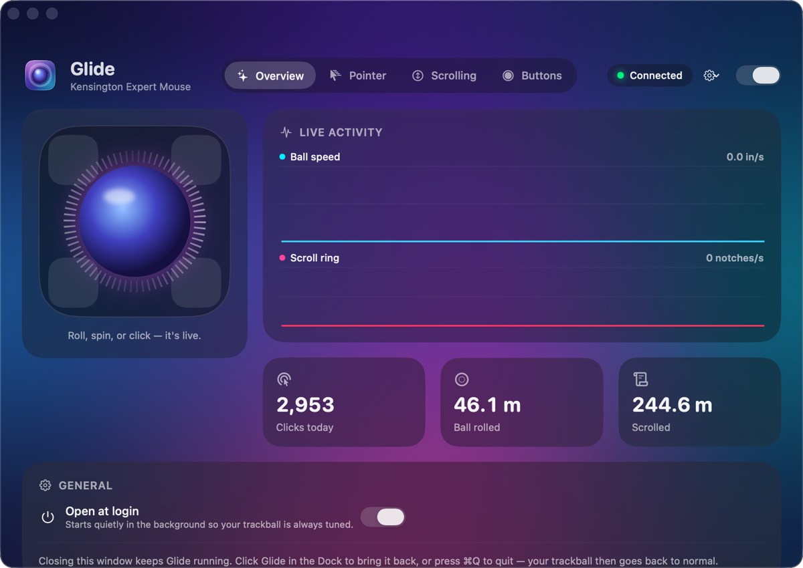
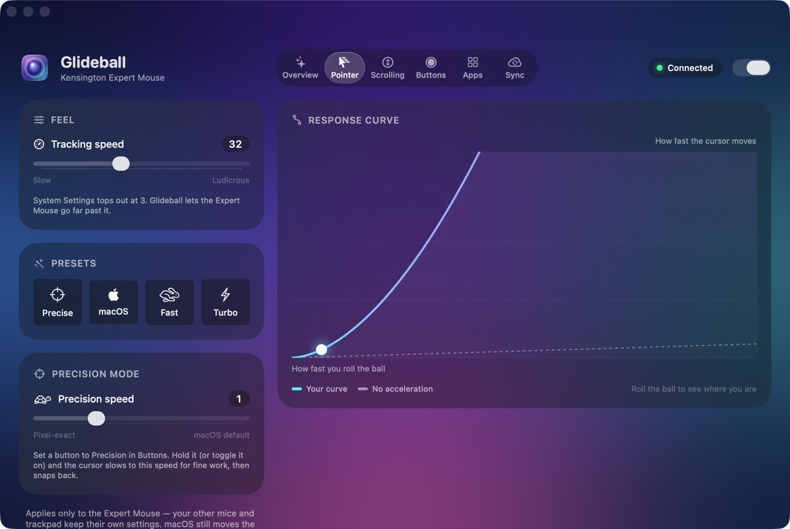
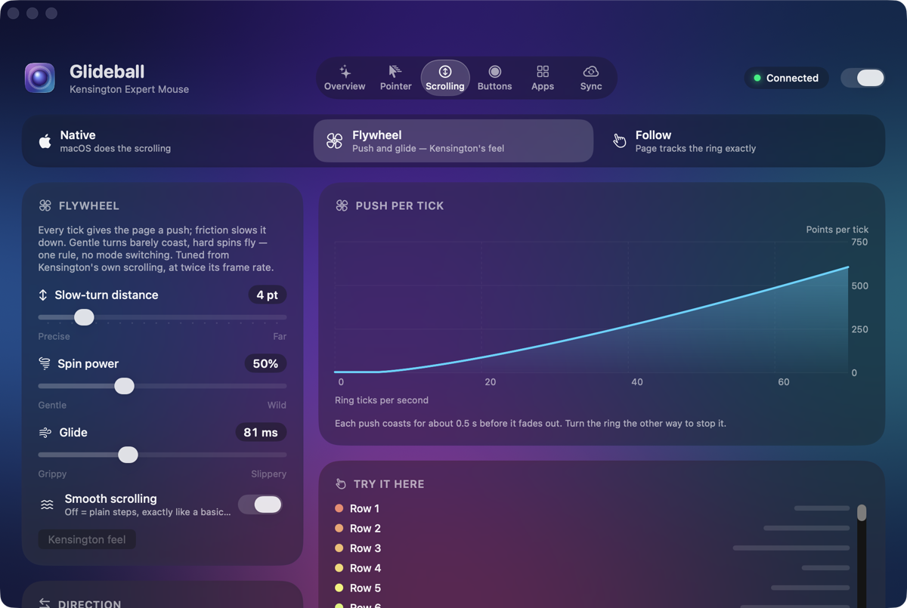
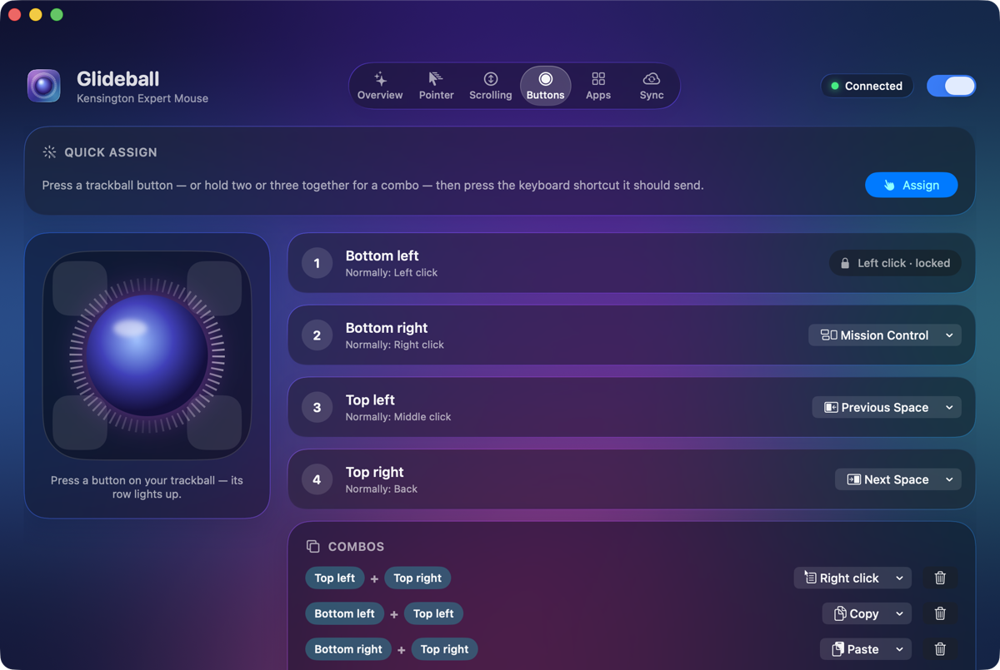

Native
macOS does the scrolling, exactly as it always has. A clean baseline.
For the Kensington Expert Mouse
Make your Kensington Expert Mouse feel amazing.
Pointer speed past macOS's limit, scrolling that actually glides, and buttons that do what you want. One free, native Mac app, built for one trackball.
Free · macOS 26 Tahoe or later · Apple silicon & Intel

Pointer
System Settings tops out at 3. Glide lets the Expert Mouse go far beyond it, so a flick of the ball crosses a big display while slow rolls stay precise.
Response curve
Drag to watch the curve climb. Illustrative, not to scale.

Scrolling
Pick how the scroll ring feels and switch any time. Like everything in Glide, it only changes the Expert Mouse.
macOS does the scrolling, exactly as it always has. A clean baseline.
Each tick gives the page a push, and friction glides it to a stop. Gentle turns barely coast; hard spins fly. Tuned from measurements of Kensington's own driver, and run at 120 Hz.
The page tracks the ring precisely, notch for notch. It only throws when you give it a real flick.

Try it
Scroll the list below with a wheel or trackpad, or drag and flick it. Then flip the switch. A real scroll wheel shows it best.
Scroll speed
px/s
Last 3 seconds. Plain steps spike; the flywheel spreads each push into a smooth glide.
Flywheel: each tick adds a push, friction (τ ≈ 82 ms) glides it to a stop. Same distance, no jolts.
Focus the list and use the arrow keys, Page Up, Page Down, Home or End. Your page will not scroll while the pointer is over the list.
Buttons & combos
Remap any of the four buttons, or chord them together for even more. Setting one up takes two key presses.
Press a trackball button, then press the shortcut it should send. That's it.
Press buttons together to trigger their own actions, on top of what each does alone.
Keep a shortcut held for as long as the button is down. Perfect for push-to-talk.
Your primary click can't be remapped, so you can never lock yourself out.

Live dashboard
The Overview tab graphs ball speed and scroll-ring activity as they happen, lights up each button as you press it, and keeps a tally of your day: clicks, distance rolled, distance scrolled.
Your pointer
px/s
Move over this card or press its buttons. Presses:
Safety
Glide is built so your trackball always works, whatever happens.
Press Control Option Command G from anywhere and Glide steps aside immediately.
If Glide isn't running or doesn't have permission, your trackball simply works the way macOS normally does.
Glide touches the Expert Mouse and nothing else. Other mice and your trackpad keep their own settings.
Backup & Sync
Export your settings to a file and import them anywhere. Or turn on sync and every Mac you use picks up the same feel through iCloud Drive. No account, no sign-up.
Install
Glide isn't on the App Store, so there's one extra click the first time. Here's exactly what to expect.
Download Glide.zip, unzip it, and drag Glide into your Applications folder.
Glide is signed by an independent developer but isn't notarized by Apple, so macOS may block the first launch. Open System Settings → Privacy & Security, scroll down, and click Open Anyway. Or Control-click Glide in Applications and choose Open.
Grant Accessibility and Input Monitoring when asked. Glide needs them to read the trackball and adjust its buttons and scrolling. Nothing leaves your Mac.
Uninstall KensingtonWorks first, then restart your Mac once so its driver lets go of the trackball.
FAQ
Glide is built and tested for the wired Kensington Expert Mouse. Other models are untested, so they may not be detected or may not behave as expected.
No. There are no analytics and no tracking. Glide only uses the network for three things: iCloud Drive sync, if you turn it on, checking GitHub for updates, and sending feedback — only when you press Send, and you see exactly what’s included first.
Quit Glide and drag it from Applications to the Trash. To tidy up, remove it from the Accessibility and Input Monitoring lists in System Settings → Privacy & Security.
Yes. Press ⌃⌥⌘G (Control-Option-Command-G) from anywhere to pause Glide. Quitting works too: your trackball goes straight back to normal.
A Mac running macOS 26 Tahoe or later, Apple silicon or Intel, and a Kensington Expert Mouse. Glide is free.
Send feedback — it goes straight to the developer.
Free for macOS 26 Tahoe or later. Apple silicon & Intel.